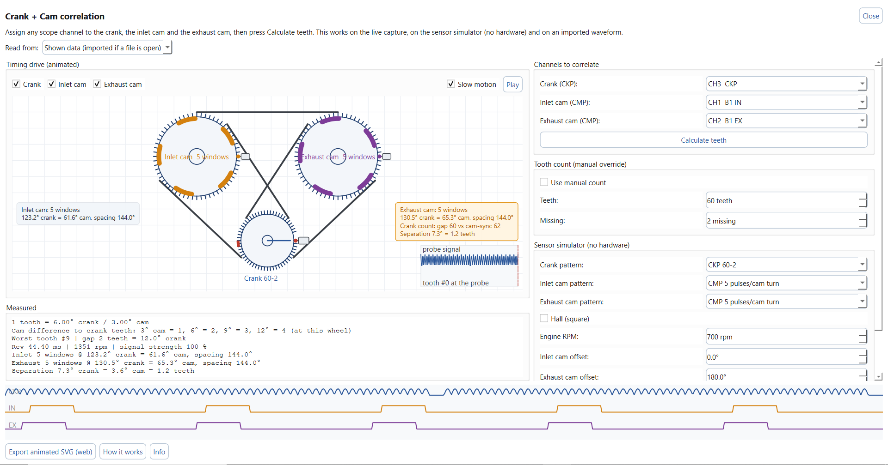

Crankshaft & Camshaft Timing Software - HantekScopeQt
Download Now Back to HomeHantekScopeQt provides advanced crankshaft and camshaft waveform analysis for automotive diagnostics. Technicians can compare synchronization between crank and cam sensors, verify valve timing, identify slipped timing belts or chains, and analyze missing tooth patterns — all from live captures or imported waveforms.

Crank and cam correlation compares the crankshaft (CKP) and camshaft (CMP) sensor signals to verify engine timing and detect slipped timing belts or chains. HantekScopeQt performs this automatically.
Yes. By measuring the phase relationship between crank and cam signals, HantekScopeQt helps identify timing faults caused by a slipped belt or chain.